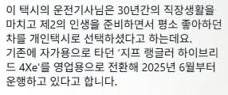

강병휘 패밀리카로 잘쓰던데 그렇게 별로인가?
'쓸 수는 있는' 것과 '쓰기 편한 것' 은 아예 별개니까
911 아니였어?
소유 해봤던거지?
랭글러 하이브리드라
연비 개박살 차니까 오히려 하이브리드가 어울리는 차라고 봐야되나?
요즘 연비 안따지던 미국에서도 HEV가 제일 많이 팔린다더라
닷지 차져 (hev) 크아아악
기술발전을 위한 트황상의 큰 그림이었나?
ㅋㅋㅋ 기름값도 있고 F1처럼 상징적인 대회도 HEV로 바뀐지 오래고
점점 슈퍼카도 고배기량에서 F1 기술 첨가한 하이브리드로 넘어가는 모양새
요즘 레이싱카는 회생제동으로 배터리 충전해서 연비향상 대신 부스터로 쏴제낌
와우 진짜 카트라이더네 ㅋㅋ
수상하게 남자 손님만 많은 차
저택시 최근 몇달사이에만 3번 봄
3번 다 아침 9시반쯤 여의도쪽에서임
궁금하다 한번 운전해보고싶다
다른차에 비해 연비차 있을텐데 저건 로망 맞다
지프 랭글러로 택시하는건 ㄹㅇ 취미로 하는거 아니냐? ㅋㅋㅋㅋㅋ
몇일전에 용산에서 봄
손님 어디로 모실까요
“백두산”
어? 나 오늘 지나가다 이 차 본거같은데
랭글러 하브
내 드림카인데 ㅋㅋ
이거 은근히 자주보이더라 ㅋㅋㅋ 종로쪽에서 한번보고 성수쪽에서한번더봄
아 랭글러도 하브 있구나
유지비 감당 되나
플러그인하이브리드라 기름값 자체는 감당 가능할수도 있는데 수리비가 ㅎㄷㄷ할듯 ㅋㅋㅋㅋ
저 승차감으로 택시를 하는것은 중죄임..
낭만 그자체네
어디로든 갈 수 있다
자가용에서 전환 안되는데?
퇴근길에 본 적 있는게 레전드.. 눈을 의심함
하브는 한대뿐일지 몰라도 걍 랭글러는 택시 두대쯤 봄
울릉도에도 있었고 서울에도 한대 있었음
랭글러 진짜 한때 내 드림카였는데 저거 살거라 하면 주변에서 좋은소리 하는 사람 하나 없더라
차값만큼 써서 오프 빡쌔게 탈 거 아니면 사실상 겉멋 용도라 뭐 하나 좋은게 없음
안전도부터 개박살난 차라
나 구례 살 때 벤츠S500 택시 있었음
랭클러 뒷좌석 승차감 존나게딱딱하고 등받이 90도라서 방지턱이나 요철 넘을때마다 엉덩이점프한다
근데 차가 이쁘긴해